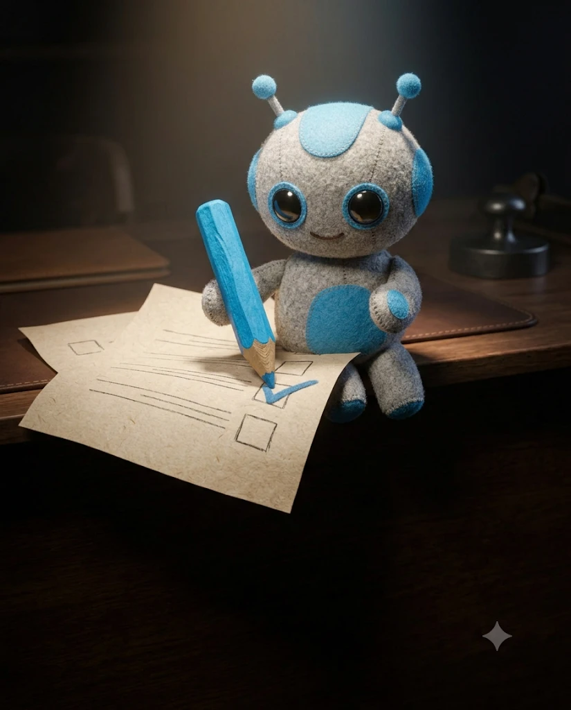

오늘 메모, 할 일 목록, 받은 요청을 다듬지 말고 그대로 붙여 넣으세요.
아래는 오늘 내 업무 메모야. 끝낸 일 · 진행 중 · 못 한 일 세 칸 표로 정리해 줘. 메모에 없는 일은 지어내지 마. [오늘 메모 붙여넣기]
못 끝낸 일마다 막힌 이유 한 줄과, 끝내려면 필요한 것(사람·자료·시간)을 한 줄씩 적어 줘.
못 한 일을 내일로 넘길 것, 다음 주로 미룰 것, 안 해도 되는 것으로 나눠 줘. 이유도 한 줄씩.
오늘 받은 요청 중 아직 답하지 않은 것만 뽑고, 지금 보낼 짧은 답장을 한 줄씩 써 줘.
내일 아침 출근하자마자 기억해야 할 것을 3줄로 요약해 줘.
팀장에게 보낼 오늘 진행 상황 메시지를 3줄로 써 줘. 완료 · 진행 · 도움 필요.
오늘 한 일 중 잘한 것 하나를 골라 평가 시즌에 쓸 수 있게 한 줄로 기록해 줘. 숫자가 있으면 넣어서.
오늘 가장 시간을 많이 쓴 일과 내일 그 시간을 줄일 방법 하나를 제안해 줘.
같은 대화창에서 이어 보내세요. 내일 일정(회의 시간)을 알려 주면 시간표까지 나옵니다.
내일 할 일을 급하고 중요 · 중요하지만 안 급함 · 급하지만 안 중요 · 둘 다 아님 4칸으로 나눠 줘.
내일 무조건 끝낼 일 3개만 골라 줘. 고른 이유와 끝났다고 볼 기준을 한 줄씩.
내일 일정은 [회의 시간들]이야. 회의를 피해서 TOP 3와 나머지 일을 시간표로 배치해 줘. 집중 작업은 오전에.
출근 후 첫 30분에 할 일 하나만 골라 줘. 바로 시작할 수 있게 첫 행동을 구체적으로.
[큰 일]을 30분 안에 끝나는 단계로 나눠 줘. 단계마다 결과물이 보이게.
내일 회의마다 미리 볼 자료와 내가 말할 것 한 줄을 정리해 줘.
내일 할 일 중 다른 사람 답이 필요한 것을 찾아, 아침에 바로 보낼 메시지 초안을 써 줘.
이 시간표에 갑작스러운 요청이 들어올 여유 시간을 넣어 다시 짜 줘. 하루 1시간 정도.
금요일이나 월요일에는 여기까지 하면 한 주가 정리됩니다.
이번 주 목표는 [목표]야. 내일 할 일이 이 목표에 맞는지 점검하고 빠진 일을 알려 줘.
이번 주 매일의 마감 기록을 붙일게. 잘 된 점 3개, 반복된 문제 2개, 다음 주 바꿀 점 1개.
다음 주 일정과 남은 일로 요일별 계획을 짜 줘. 요일마다 TOP 3.
매일·매주 반복되는 일을 찾아 템플릿이나 자동화로 줄일 후보를 골라 줘.
2주 이상 미뤄진 일을 찾아 지금 하기 · 맡기기 · 지우기 중 하나로 정해 줘.
이번 주 마감 기록으로 주간 보고 초안을 써 줘. 성과 · 진행 · 이슈 · 다음 주.
이번 주 기록에서 내가 집중이 잘 된 시간대와 안 된 시간대를 찾아, 다음 주 시간표에 반영해 줘.
오늘 쓴 마감 형식을 매일 쓸 수 있게 빈칸 양식으로 만들어 줘.
메모 대신 이 양식을 채워 PART 1에 붙이면 더 정확하게 정리됩니다.
[하루 마감] [날짜] ■ 오늘 끝낸 일 - ■ 진행 중 (어디까지) - ■ 못 한 일 (이유) - ■ 답해야 할 요청 - ■ 내일 TOP 3 1. 2. 3. ■ 내일 일정 (회의) -
요일마다 쓰는 프롬프트만 바꾸면 됩니다.
| 요일 | 퇴근 전 10분 | 쓰는 프롬프트 |
|---|---|---|
| 월 | 이번 주 목표 정하고 내일 TOP 3 | 17 · 10 |
| 화~목 | 오늘 정리 → 내일 TOP 3 → 시간표 | 01 · 10 · 11 |
| 금 | 한 주 돌아보기 + 주간 보고 | 18 · 22 |
| 금 | 다음 주 요일별 계획 | 19 |
| 매일 | 답 안 한 요청 처리 | 04 |
정리와 순서 정하기를 도와주는 용도입니다. 결과를 쓰고 있는 할 일 앱이나 캘린더에 옮겨 두면 가장 좋습니다.
같은 대화창을 계속 쓰면 앞 내용을 기억하지만, 길어지면 정확도가 떨어집니다. 일주일에 한 번 새 대화로 시작하는 걸 권합니다.
회사 보안 규정을 먼저 확인하세요. 회의 이름은 [회의A]처럼 바꿔도 시간표는 똑같이 나옵니다.
됩니다. 글만 다루는 프롬프트라 어디서나 비슷하게 동작합니다.
이메일만 남기면 바로 열려요. 다음 자료가 나오면 먼저 알려드릴게요.